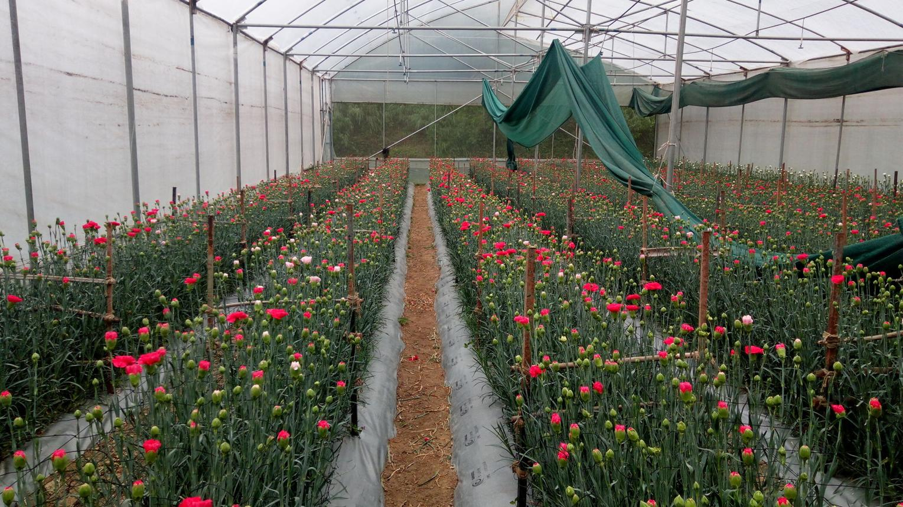
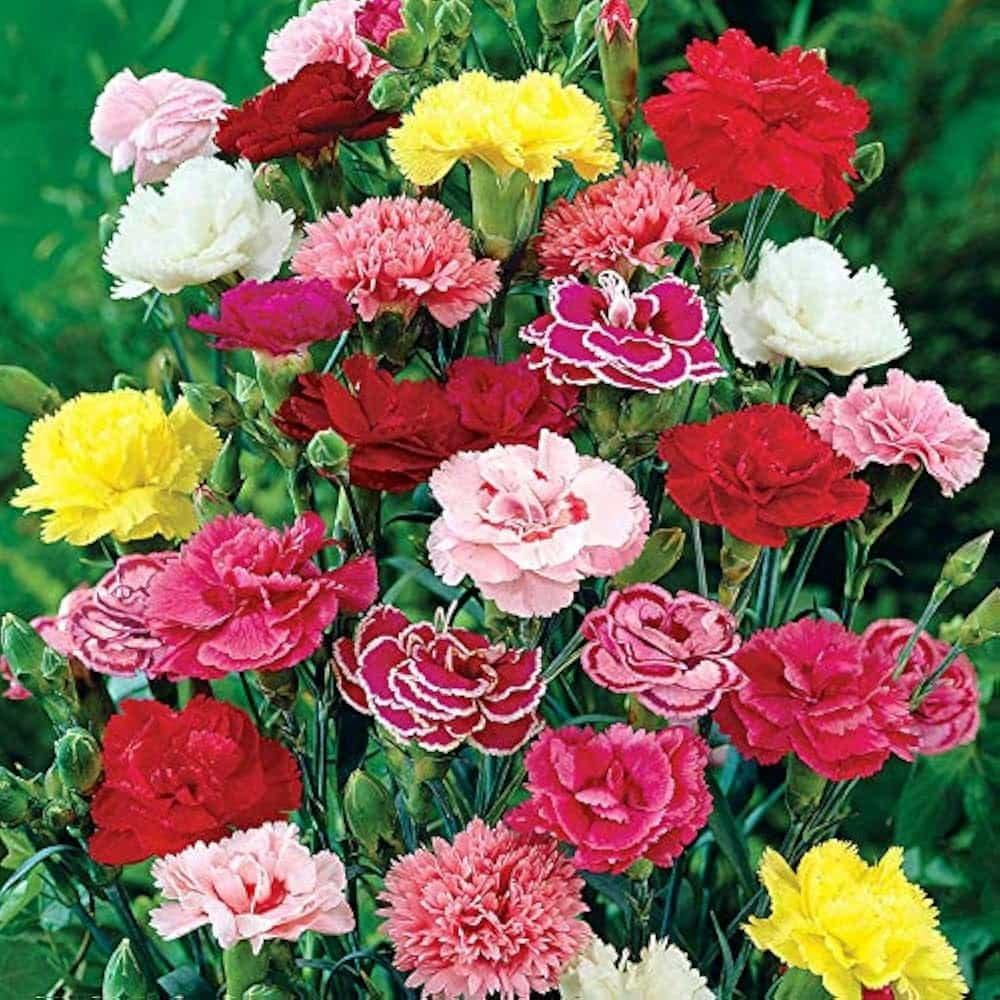

Issue 01 · Floriculture
The economics of cut flowers, written from the field.
A working journal on commercial floriculture — crop choices, regional cycles, tunnel economics, and a visual catalog of every flower we trial. Built for growers who want numbers, not poetry.

Cover · Solan, India
Carnation under polyhouse — April 2026
Crops profiled16
RegionsSolan + Pune
Tunnel size1,200 sq ft
UpdatedApr 2026
Featured study
Long read

Crop economics · Regional
Flower Crop Profit Model: Solan vs Pune & Mumbai
A side-by-side breakdown of sixteen cut-flower crops across two climate regions — lifecycle, water, nutrient cost, plantation outlay, and per-tunnel revenue. Open any crop card to see the full agronomy and economics profile alongside its visual catalog.